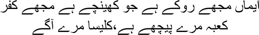

38

Faith holds me back; disbelief pulls me away
Kaaba lies behind me; the Church, in front
o you know what all the people of integrity around me said to prove that I was an obscene writer, Mirza sahib? They had only one question—why do brothels and prostitutes keep featuring in my stories? How can a whore be the central character of a story? Who were these people to raise these questions? Those who puffed up their chests calling themselves progressive, chroniclers of the lives of the lower strata of society. Yes, Mirza sahib, even to these people, whores were worse than cockroaches in drains. And yet many of them had secretly visited red light areas. I never tried to conceal the fact that I had been there. Compared to the colourless people around me, those discarded, painted women, their pimps, the flower sellers and kebab-wallahs in those localities all appeared far more alive to me. Those girls could even kill to get someone whom they had loved. The red light world that lies beyond ours is like an epic poem. I didn’t make up the stories of Saugandhi and Sultana and Nesti and Bismillah and Mehmooda and Zeenat; they all lived in the brothels of Delhi and Lahore and Bombay once upon a time.
I had a bitter argument with the King of Mahmoodabad once. His point was the same, ‘What do you see in these filthy women, Manto? You visit them for fun, and then you write these philosophical stories about them.’
— Can you tell me what crime I’ve committed by writing about them?
— Literature isn’t for depicting the world of immorality.
— Then why is literature written, Raja sahib?
— To depict our dreams.
I laughed. —Aren’t ‘they’ among the ‘we’ you talk about? Don’t they have the right to dream? Is no one going to write about their dreams? This game of ‘them’ and ‘us’ is a very interesting one, Raja sahib. The communists are experts at it.
— Do you hate Communism?
— I don’t know. What I do know is that my communist friends were the first to brand me obscene.
— You will keep writing about whores, but you expect them not to call your stories obscene?
— If telling stories about whores is obscene, then the existence of whores is obscene too. Why is this obscenity allowed to persist? If it is forbidden to write about prostitutes, the profession must be forbidden too, Raja sahib. Put an end to prostitution, and no Manto will be born to write about prostitutes. We can write about farmers and labourers, about barbers and washermen, about thieves and robbers. We’re allowed to spin yarns about djinns and fairies. Then why can’t we write about whores?
— Go on, write as much as you want to. Your stories will be nothing better than garbage.
— That’s just what I want, Raja sahib.
— What do you mean?
— Let all that’s filthy in our society be gathered in my stories. May all of you see what really lies behind the cleanliness.
— Do you consider yourself a prophet of God?
— No. Writers and poets are the weakest creatures in this world. Anyone can kick them away, Raja sahib. They have no power. They have only written honestly about what they have seen, what they have felt. No, I’m not trying to tell you all this. Because you won’t understand.
— Then tell me the things I will understand.
— Do you know what a district of whores actually is?
— What is it? A district of whores can only be a district of whores. Still, let’s hear Manto’s new commentary.
— It’s a rotted corpse. Our society bears this corpse on its shoulders. Until the dead man is buried, Raja sahib, people will keep talking about him. But you know what, no matter how badly the body has rotted, no matter how gruesome it looks, someone somewhere is going to look at its face. And what’s wrong with that? Do we not have a relationship with the dead man? Think about it, Raja sahib, are we not the ones who killed him? Why is it still a crime to look at his face? Can Manto be branded obscene just because he looked?
— I agree that as a writer of stories you’re the best, Manto. Can’t you leave this world out of your stories?
— No, Raja sahib. Then let me tell you Nesti’s story today.
— Who’s Nesti?
— A whore. Listen to the story of how she became one.
— Tell me, then. Raja sahib smiled. —There’s no match for you when it comes to spinning a yarn.
— Nesti was nowhere in the picture when this story begins, Raja sahib. It starts with Abu the coachman. Abu was a good man, Raja sahib. You must remember that the word ‘good’ carries the fragrance of the garden. He was a man of delicate tastes, and his carriage was the best in the city. He had done up his coach after his own heart. He never accepted casual passengers; all his passengers were regular customers. Unlike other coachmen, Abu wasn’t addicted to drink; his craving was for clothes. When Abu’s carriage went down the road, people would sneer, ‘There goes the prince’s vehicle.’ This would not only make Abu’s chest swell with pride, it would also make his horse Chinni canter faster. It was true that Abu held the reins, but Chinni read Abu’s mind so well that he never had to be whipped. It was as though Abu and Chinni were not two separate creatures at all, Raja sahib. Some of the other coachmen did try to copy Abu, but none of them shared his fine taste.
So one afternoon Abu was lying back in his carriage in the shade of a tree. Just as he was about to fall asleep, a voice made him open his eyes. He discovered a young woman standing near him. Abu jumped up. Her beauty had pierced him like an arrow, you see. The dark-skinned, sixteen- or seventeen-year-old girl was glowing with the radiance of youth.
— What do you want? Abu stammered. It was like a dream, Raja sahib, as though an angel had descended from jannat to appear before him.
— How much to the tashun?
‘Not a penny,’ smiled Abu.
‘How much to the tashun, please tell me,’ she repeated.
— You think I’m going to charge you? Get in.
— What do you mean? She stiffened.
— Just get in. Pay whatever you like.
She got into Abu’s carriage. —Quick.
— What’s the hurry?
— You … you won’t … She stopped.
Abu’s carriage began to move. Chinni’s hooves acquired an unknown rhythm. The young woman was sitting behind Abu. Several times he stopped himself from stealing a glance. Finally she said, ‘Aren’t we at the tashun yet?’
— We’ll be there soon. Abu smiled. —You and I have the same tashun.
— Meaning?
— You’re not so stupid, my love. You and I have the same tashun. I knew the moment I saw you. On my heart, I’ve become your slave.
She didn’t answer, wrapping her shawl closely around herself.
Abu asked, ‘What are you thinking of, my love?’
Still she didn’t speak. Suddenly Abu stopped his carriage. Leaping down, he went round to the back and sat next to the young woman. Grasping her hand, he said, ‘Give me the reins to your heart, my love.’
— Enough. The young woman spoke with a bowed head.
Abu put his arms around her. She tried to stop him at first, but then quietened down. Abu went on, ‘I love this carriage and horse more than my own life. I swear on the lord, for you I can even sell them. I’ll buy you gold jewellery, my love. Say that you’ll live with me. Otherwise I’ll slit my throat right now, before your eyes.’
The young woman stared at him. Eventually Abu muttered, ‘I don’t know what’s wrong with me today. Let me take you to the tashun.’
— No. You touched me.
— Forgive me. I made a mistake.
— Isn’t there a price to be paid for a mistake? She flared up.
Abu looked at her. Putting his hand on his heart, he said, ‘I can give my life up for you.’
Holding out her hand, she said, ‘Then take my hand.’
Grabbing it, Abu said, ‘I am your servant today onwards.’
This girl was Nesti, Raja sahib. She had come from Gujarat; her father was a cobbler. Leaving home, Nesti moved in with Abu. They were married the next day. No, Abu didn’t have to sell either his coach or his horse. He bought Nesti silk kurta-pyjamas and earrings with his savings. He would often say, holding her in his arms, ‘You are my princess.’
A month or so later, the police suddenly arrested Abu on charges of abduction. Nesti was by his side throughout. The court sentenced him to two years in jail. Putting her arms around him, Nesti told Abu, ‘I won’t go back to my parents. I’ll wait for your return, mian.’
— Look after yourself. I’ve asked Dino to drive the carriage. Make sure he settles accounts with you daily, bibijaan.
Despite her parents’ entreaties, Nesti didn’t go back, Raja sahib. She lived by herself in an unknown city, waiting for Abu to return. Dino used to give her five rupees every evening. Nesti lived on it comfortably. She was allowed to meet Abu at the jail once a week. She would take specially cooked food and fruit for him.
One day Abu noticed that Nesti’s earrings were missing. —Where are your earrings?
Widening her eyes, Nesti felt her ears. ‘Oh my God! I didn’t even notice. Where did they fall off?’
— There’s no need to bring me food, bibijaan. I’m fine.
Nesti saw Abu collapsing with every passing day. The last time that she saw Abu in jail, he was a skeleton instead of a healthy man. Nesti thought that being separated from her was killing him. Actually, Raja sahib, Abu had tuberculosis. Abu’s father and brother had also died of it. From the jail hospital Abu had told Nesti, ‘If I’d known I’d die this way I wouldn’t have married you, bibijaan. Forgive me. Look after Chinni and the carriage. They will take care of you. Tell Chinni I will never forget him.’
Abu left this world, leaving Nesti alone and without support. But Nesti was a girl of unusual mettle, Raja sahib. She stood firm through her agony. She spent all day at home by herself, thinking of Abu. In the evening Dino came with the money due to her.
— Don’t worry, bhabiji. Abu was like my brother. I’ll do everything I can for you. Dino said this to her one day.
— Whatever the lord’s will …
— The lord accomplishes his tasks through human beings, bhabiji. Don’t be so depressed, I don’t like it.
— What should I do, Dino bhai?
— Get married again. Do you plan to spend your entire life mourning Abu bhai?
— Marriage!
— I’m ready whenever you are.
— Dino bhai!
— What is it?
Nesti had wanted to kick Dino out of her house. She couldn’t do that, of course; all she could say was, ‘I’m not going to get married again, Dino bhai.’
Dino’s behaviour changed after this. Instead of five rupees, he began to give her four rupees on some days, even three at times. When Nesti asked he would say, there aren’t enough passengers, earnings have dropped. Then Dino began to pay Nesti once in two or three days. Eventually Nesti was forced to tell him, ‘You don’t need to drive the carriage anymore, Dino bhai. I’ll take care of it.’
Nesti gave the responsibility to a friend of Dino’s. Within a few days, he, too, proposed marriage to Nesti. She turned him down as well. Now she asked a coachman she didn’t know to drive the carriage. One night the man turned up drunk and began to tug at her hand, Raja sahib.
For seven or eight days the carriage and horse remained unused. Nesti didn’t know what to do. How was she to pay for her daily expenses, Chinni’s food, and the rent for parking the coach? All that the men did was propose marriage. Nesti knew only too well that they just wanted to sleep with her. People looked at her covetously whenever she went out. One night the next-door neighbour even began to kick on her door, saying, ‘How much do you want, bitch? How much to open the door?’
One day, it suddenly occurred to Nesti that she could drive the carriage herself. When Abu took her out, she had driven sometimes. She knew her way about the city too. Why not, then? If a woman could labour in the fields and work as a porter, why couldn’t she drive a carriage as well? Mulling over this for a few days, Nesti decided that she would drive the carriage.
The other coachmen were stunned to see Nesti driving her carriage. Many of them began to laugh in amusement. The eldest tried to explain to Nesti that it wasn’t a woman’s job to drive a horse-drawn carriage. She paid no attention. Patting Chinni, and carrying on a conversation in her head with Abu, she set off.
There was uproar across the city. A pretty woman was driving a horse-drawn carriage. People waited for Nesti’s coach to come by. In the beginning she didn’t take male passengers, but later she overcame this reservation too. Nesti began to earn quite well. Her carriage never had to wait for passengers, Raja sahib. Men were always ready for a ride with her. I’m sure you will not deny the male urge to watch a woman’s shoulders, waist, arms, breasts, and buttocks for a length of time, will you, Raja sahib? Nesti knew it only too well. But what could she do? She had to make an honourable living, after all. She had fixed hours for her work—from seven in the morning to noon, and then from two in the afternoon to six in the evening. Nesti had worked out her own survival strategy this way, Raja sahib.
One day she was summoned by the municipal committee and informed that her carriage licence had been cancelled. Why? Women were not allowed to drive horse-drawn carriages. ‘I know how to drive, sir,’ said Nesti. ‘What’s the problem?’
— You cannot drive anymore.
— Why not, sir? If women can do all other kinds of work, why can’t they drive carriages? This carriage and horse belonged to my husband. Why can’t I drive it? How will I survive if you don’t allow me to drive, sir?
Do you know what the municipal officer said? —Go join a whorehouse. You’ll earn plenty.
How was a woman like Nesti supposed to respond? She was forced to sell the horse and the carriage. She went to Abu’s grave. I can swear, Raja sahib, there were no tears in her eyes— they were as dry as the desert. Placing her forehead on the gravestone, she said, ‘They won’t let me survive. Forgive me.’
The next day Nesti applied to the flesh market. Yes, she would sell her own flesh every night from now on. Shall we erase this story of Nesti’s from history, Raja sahib? Will everything turn clean and pure automatically?
No, Mirza sahib, Raja sahib did not answer my questions. What could he have said, after all? Had he ever seen a woman like Sultana? I wrote about Sultana in my story ‘The Black Shalwar’, my brothers. A whore wants a black shalwar to wear for Muharram—where’s the obscenity in this insignificant wish? But they—the pillars of society—were always able to ferret it out; they couldn’t see the person as a whole, they merely winkled out a few words, certain moments. Do you know who they were? After all the manuscripts and comments and footnotes and ink and pens they ascend their thrones—they aren’t poets—they’re professors of the written word—toothless—a film of impotent mucus over their eyes, and salaries of a thousand rupees a month, with another thousand and a half to be earned from pecking at the flesh and worms in the bodies of dead poets.
How would they understand Sultana? In the late afternoon she appeared in the balcony of the dilapidated building in the district of whores. The railway yard was visible from Sultana’s balcony. She looked at the railway lines and then at her own hands. The swollen blue veins on them seemed to resemble those railway lines. Train engines and bogeys were perpetually moving about in the yard; belching smoke, the engines darkened the skies in front of Sultana’s eyes. Very often a train was shunted to a particular track and made to chug along it, making Sultana feel that she too had been shunted to a track on which she had been moving ever since. She had no control over this journey. Some other people would press switches and make decisions for her. She would never get to know her destination. Then, one day, she would be made to slow down and stop somewhere unknown.
Sultana had met a rather unusual man. His name was Shankar. He could often be seen standing across the road, gazing at Sultana’s house. Business wasn’t booming for her, and she would be alone all day. One day she ended up beckoning to Shankar. He entered and took a seat in a manner that suggested Sultana, and not he, was the client. Sultana was amused. ‘What can I do for you?’ she asked.
— For me? Better to ask what I can do for you. You’re the one who called me.
Sultana was surprised.
Shankar continued, ‘I understand. Now listen to what I have to say. It’s not what you think. I’m not the kind of person who’ll just come in here, spend some cash and leave. I have a fee too. Don’t you pay the doctor when you call him home? It’s the same with me.’
Although taken aback by what Shankar told her, Sultana could not suppress a smile. ‘What do you do for a living?’ she asked.
— Exactly what you do.
— Which is?
— What do you do for a living?
— I … I … nothing.
— Nor do I.
— That doesn’t mean anything. There must be something you do.
— Then so do you.
— I don’t know. I just pass the time.
— So do I.
Shankar used to visit her quite often. One day Sultana asked him, ‘Will you marry me?’
— Marry? Are you mad? Neither of us will ever get married, Sultana. All these old-fashioned things are not for us. Don’t make such absurd requests again. You’re a woman. Say something to make me happy for a little while. Life isn’t just a place for transactions.
— Come clean with me. What do you want from me?
— What everyone else wants. Shankar answered dispassionately.
— Then how are you different from them?
— Look, Sultana, there’s no difference between you and me. But there’s a world of difference between me and the rest of them.
Yes, Mirza sahib, I knew all along, I even said it out aloud, that I was different from everyone else around me. But I wasn’t different in any way whatsoever from Sultana and the rest of them. I came into the market of this world to sell myself in one way or another. Those who accused me of obscenity sold themselves too, but they concealed their prostitution and floated balloons of personal greatness. I was a whore through and through; every brothel in the world was my address.